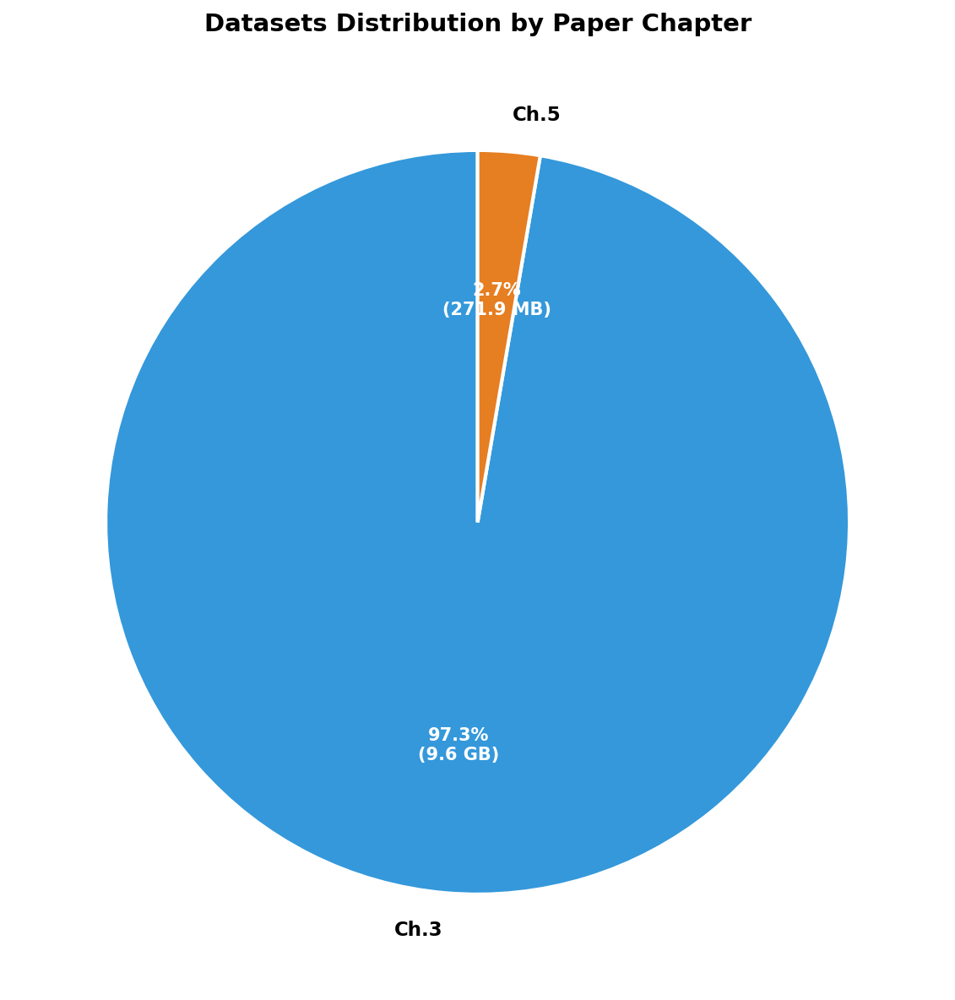
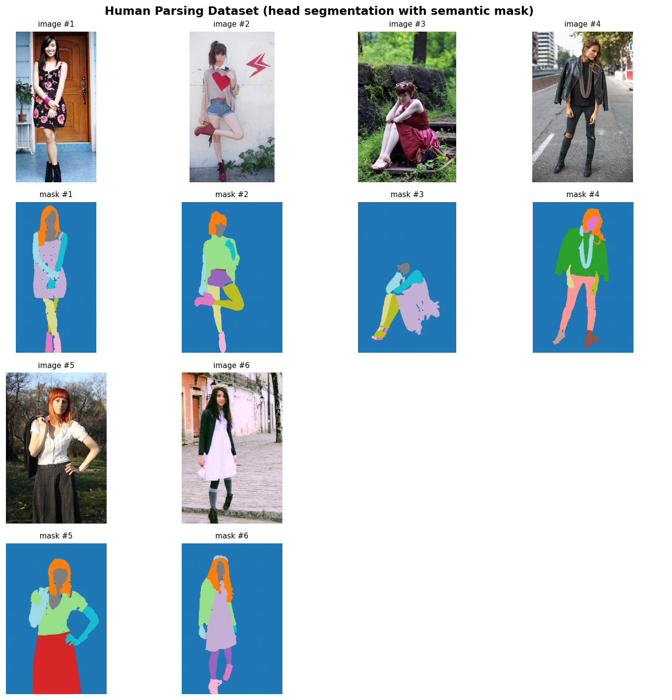
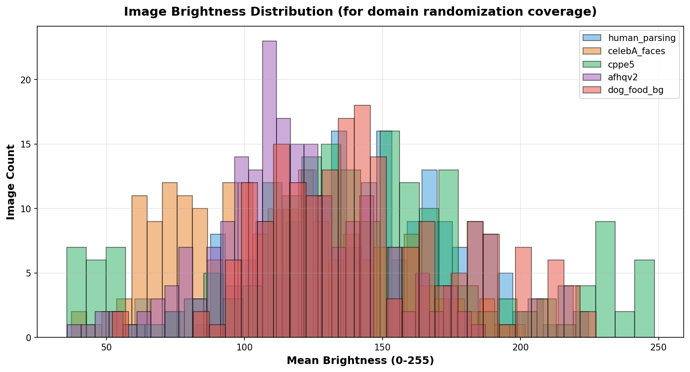
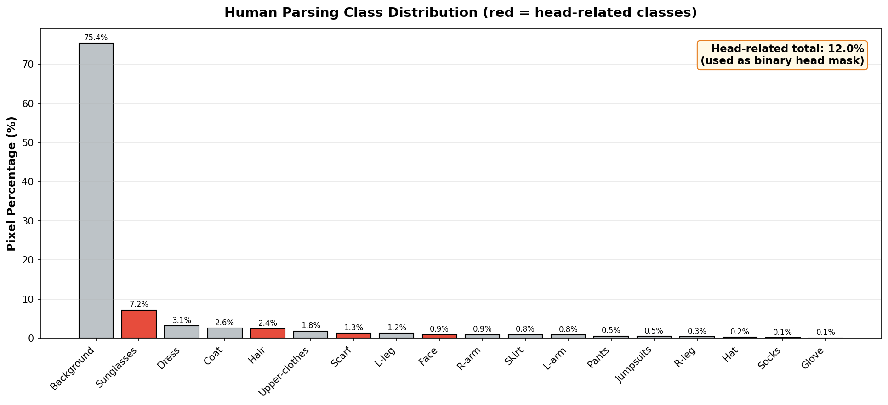

1.数据集统计
2.数据集清单
| 数据集 | 用途 | 论文章节 | 样本数 | 体积 | 授权 |
|---|---|---|---|---|---|
| Human-Parsing | 人体18类语义分割（含头部） | Ch.3 | 17,706 | 760 MB | CC-BY-4.0 |
| CelebA-Faces | 高质量人脸（多样化头型） | Ch.3 | 67,533 | 441 MB | 非商用 |
| CPPE-5 | 医疗防护装备 | Ch.3 | 1,029 | 230 MB | CC-BY-4.0 |
| Protective-Equipment | 安全帽（最贴合脑磁头盔场景） | Ch.3 | 11,982 | 2.1 GB | CC-BY-4.0 |
| AFHQv2 | 动物面部（OOD 域外测试） | Ch.3 | 12,155 | 6.1 GB | 非商用 |
| Dog/Food Images | 背景域随机化 | Ch.5 | 3,000 | 272 MB | CC-BY-4.0 |
| Wikiart-bg | 背景纹理多样性 | Ch.5 | ~80K | — | CC-BY-4.0 |
| NeRF-Synthetic | 多视角配准基线 | Ch.4 | 8 场景 | — | MIT |
3.统计可视化

Figure 3. 各训练数据集磁盘占用对比。AFHQv2 占用最大 (6.1GB)， 作为 OOD（域外）测试数据评估模型鲁棒性。

Figure 4. 训练样本量对比（对数坐标）。CelebA 样本量最大 (67K)， 提供丰富的人脸多样性。

Figure 5. 按论文章节分组的数据占比。 第 3 章（头部分割）占用 90%+ 数据量，反映本文对鲁棒性的强调。
4.数据样本展示

Figure 6. 所有训练数据集样本综合对比。

人体 18 类语义解析（含头部相关 5 类: Hat / Hair / Sunglasses / Scarf / Face）， 可直接转换为头部二值 mask 用于 YOLOv8n-seg 训练。

CelebA 高质量人脸图像，提供丰富的头型、肤色、性别、年龄多样性。

★ 与脑磁头盔最相关数据集：工业场景下佩戴安全帽的人物图像， 能有效模拟 OPM-MEG 头盔佩戴时的视觉外观。

CPPE-5 医疗防护装备：白色防护服 + 护目镜 + 口罩 + 头帽， 与脑磁场景的视觉风格相似。

AFHQv2 动物面部数据集，作为 OOD（域外）测试数据， 评估模型在非人类头部上的鲁棒性下降。

通用图像（食物/动物等）， 用于第 5 章合成数据生成时的背景纹理替换，实现背景域随机化。
5.数据分布特征
为评估数据多样性与"域随机化"策略覆盖度，对各数据集采样 200 张图像进行分布分析。

Figure 7. 各数据集图像分辨率分布散点图。Human-Parsing 与 CPPE-5 提供高分辨率训练数据， CelebA 和 AFHQv2 为标准化 512² 输入。

Figure 8. 亮度分布直方图。覆盖范围 30-220 (0-255)， 可保证模型在低光、正常、强光照场景下的泛化能力。

Figure 9. RGB 通道分布。各数据集颜色分布呈现互补性， 联合训练可避免颜色域过拟合。

Figure 10. Human-Parsing 数据集语义类别像素占比。 红色为头部相关类别（Hat/Hair/Face/Sunglasses/Scarf）， 占比 12%，可作为头部二分类的训练标签。
6.数据使用说明
6.1 各章节数据对应关系
-
第 3 章 头部分割:
Human-Parsing(主) +CelebA+CPPE-5+Protective-Equipment作为 YOLOv8n-seg 训练数据；AFHQv2用于 OOD 测试。 -
第 4 章 NeRF 配准:
NeRF-Synthetic经典 8 场景作为多视角数据格式参考。 -
第 5 章 VFMReg:
Blender 程序化生成 8 万张合成数据 +
Wikiart/Dog-Food背景域随机化。
6.2 复现数据准备
# 1) 设置 HF 国内镜像 export HF_ENDPOINT=https://hf-mirror.com # 2) 下载所有数据集 (一键脚本) python preprocess/convert_datasets.py --download_all # 3) 重新生成本报告 python demo_reports/run_all.py
⚠ 授权声明: 本研究仅作学术用途，所有数据集严格遵循原作者协议（CC-BY-4.0 / 非商用）。